Pupil’s Book
My Five Senses · Pupil’s Book · pages 12–14. All six activities are preserved in source order; editorial practice controls are kept distinct from the printed text.
1. Listen and read.
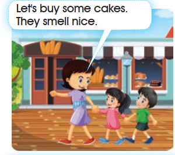
Let's buy some cakes.
They smell nice.
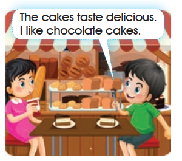
The cakes taste delicious.
I like chocolate cakes.
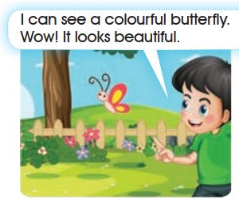
I can see a colourful butterfly.
Wow! It looks beautiful.
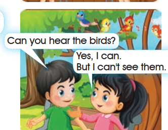
Can you hear the birds?
Yes, I can.
But I can't see them.
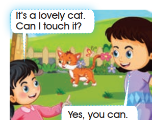
It's a lovely cat.
Can I touch it?
Yes, you can.
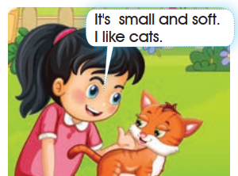
It's small and soft.
I like cats.
Panel order follows the page: two pictures per row, left then right, from top to bottom. The printed bubble in panel 6 sets a double space after “It's”; the transcription here keeps single spacing.
2. Let’s learn!
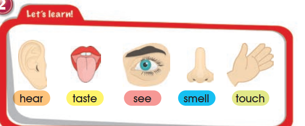
hear
taste
see
smell
touch
3. Listen and repeat.
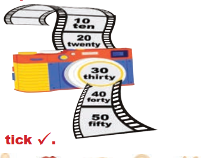
4. Listen and tick ✓.
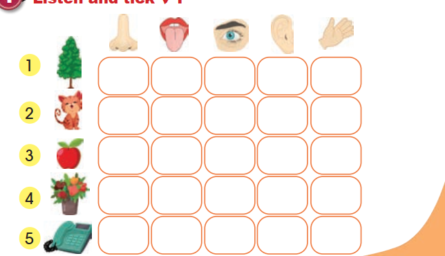
Open the source page · Pupil’s Book · p. 13
The original supplied image, unchanged. Open it at full size to review the artwork and print.
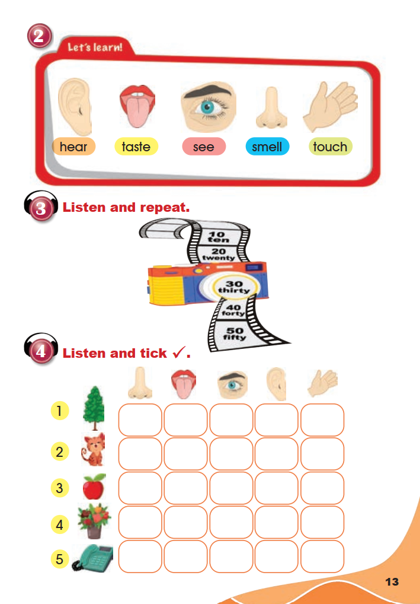
5. Listen and sing.
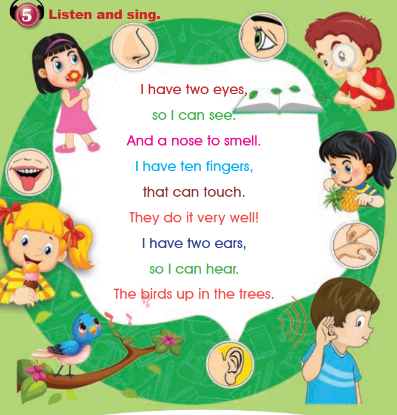
- I have two eyes,
- so I can see.
- And a nose to smell.
- I have ten fingers,
- that can touch.
- They do it very well!
- I have two ears,
- so I can hear.
- The birds up in the trees.
The nine printed lines are reproduced in their original order; the book prints no title for the song.
6. Listen to the following sounds and words, then repeat them.

coat
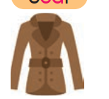
goat
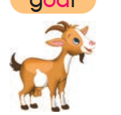